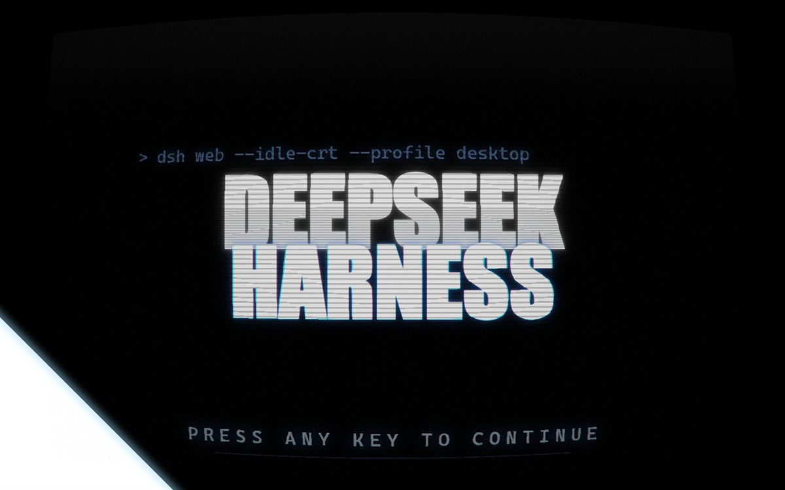

[01] dsh-idle-crt — 待机显像管
v0.3.1 · MIT · 派生自 dsh-splash-crt
会话停了，人也不动键盘，页面才盖上一块 CRT 板：辉光字、扫描线、循环反色扫描。你回来点一下窗口、按个键、碰一下触摸屏，它淡出，页面还是原来那个页面。
系统屏保管不了「这一页」：Windows 的屏保是整机层面的事，可 DSH 在跑长任务时你未必想让它盖掉进度；反过来，去泡杯咖啡回来，系统屏保又不会告诉你这十分钟 Agent 没在干活、可以放心走开。这个插件只做一个很窄的判断——宿主给出 busy=false，而且这一页十分钟没人碰过——两个条件都满足才出现，有活干时它一次都不会亮。
不抢焦点，也不劫持输入：只在窗口内点击、按键、触摸、右键时才收板；滚轮只锁滚动；鼠标移动默认不收起（移动不等于「人在看」）。

dsh plugin --profile desktop add dsh-idle-crt[02] dsh-om-messiah — 祷文转换
v1.4.3 · Host 插件 + 客户端按钮
你发给 DSH 的每一句提示词，在交给模型之前先被改写成一篇万机之神祷文；DSH 的回复原样返回。发祷文还是发原文，由你在发送前自己决定。
拦截点是 Host waterfall 的 agent/pre-step：拿到这一批用户消息，只替换本批次里的文本块，不碰历史消息，也不碰引擎自己追加的运行时上下文。
用户消息
└─ agent/pre-step ──▶ 改写 ──▶ 模型
· 只换本批次的文本块
· 不碰历史，不动运行时上下文
· 档位 framed / rules / off
· 风格基准逐字抄在 lib/template.js
改写层分三档：framed 把原话整个框进祷文；rules 只加规则性的开场与收束；off 原样放行。客户端与宿主共用同一份常量，输出逐字一致，有测试盯着。
不装插件也能用：om-messiah --serve 起一个本地反向代理，把最后一条 user 消息包装后转发。代价是绕开 DSH 的会话与审计，所以它不是默认通道。
dsh plugin --profile desktop add dsh-om-messiah
om-messiah --serve[03] awesome-dsh-plugin — 插件目录
目录 · GitHub · 由我维护
DSH 插件市场的收录仓库。上面两件东西的条目在这里提交与维护，别人的插件也走同一套收录标准：能装、能跑、说明写清楚。没有评分，没有排行，没有「精选」——一条目录只回答三个问题：这包干什么、装哪一行、源码在哪。
gh repo view yuanzephyr920-oss/awesome-dsh-plugin- 形态
- 纯 Markdown 清单
- 门槛
- 能装、能跑、说明清楚
- 收录
- 开放 · 提交条目或 Pull Request
[04] 出处与许可
dsh-idle-crt 是 dsh-splash-crt 的衍生改造，MIT 协议：画面部分（CRT 着色器、反色扫描、辉光字排版）版权归上游作者。上游把它做成「启动时一闪而过的 CRT 闪屏」，我把它改成待机屏保时补上的是：空闲检测、输入语义、与其它插件的共存层、设置页，以及逐帧 GPU 合成。
dsh-om-messiah 与本站源码都在 GitHub 上，同样以 MIT 发布。这个站的文字部分按 CC BY 4.0 授权——要抄，注明出处即可。
「版权归原作者」是事实，也是能改的前提；改不动的地方，我就没碰。